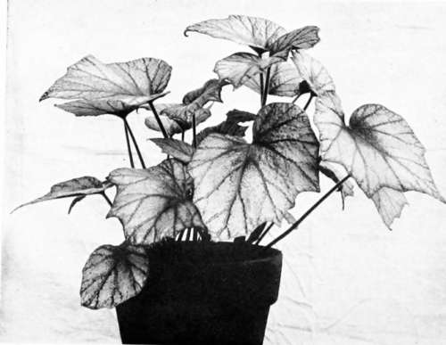
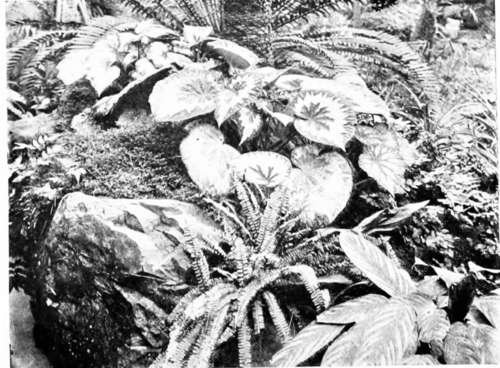

XXI. Begonias
Description
This section is from the book "Indoor Gardening", by Eben E. Rexford. Also available from Amazon: Indoor Gardening.
XXI. Begonias
WHEN a plant enjoys the popularity which the Begonia can justly pride itself on, it may be set down as certain that it has many and very positive merits. We find the favorite flower occupying a place only second to the Geranium in most window-gardens, and in many collections it is given the place of honor. Some grow it for its flowers, others for its foliage. Many sorts do not lay claim to any particular beauty so far as flower is concerned, but these have, as a general thing, such peculiar and strikingly beautiful foliage that the amateur florist is not content, after seeing well-grown specimens of them, until he becomes the owner of some of the most distinct varieties. Begonia-growing often becomes a fad with those who admire this plant, and often entire collections are made up of the representative types of the great Begonia family.
The impression formerly prevailed-indeed it prevails at present, to some extent-that inexperienced persons could not grow the Begonia satisfactorily. The impression is a wrong one. With the exception of the Geranium, I know of no plant the amateur florist can reasonably expect more success with, provided he understands something about the nature of the plant, and gives it the treatment it requires, as nearly as he can.
All Begonias, with the exception of the tuberous class, have fine, fibrous roots. The amateur florist who has kept his or her eyes open while acquiring experience among plants, will have learned that nearly all plants whose roots are fine and fibrous in character, and freely produced, like a rather spongy, porous soil-something they can penetrate easily, and which has a tendency to retain moisture without becoming heavy and compact, under repeated applications of water. Such a soil admirably suits the Begonia, while a soggy, compact soil does not suit it at all, though such is the adaptability of the plant that it will grow, after a fashion, in almost any kind of soil. This fashion, however, is one that the woman who really loves her plants will never be satisfied with. To achieve the highest degree of success with the Begonia you must give it the soil best suited to its needs.
Hybrid Begonia.
Leaf-mold from the woods-or its substitute of turfy matter-mixed with sharp, coarse sand until the entire mass is friable will grow fine plants.
All kinds of Begonias should be provided with the best of drainage. In a soil from which the surplus water cannot run away readily you cannot expect to grow fine specimens. Undue retention of water will very soon sour the soil, and if there is one thing the Begonia objects to more than another it is a soured soil to spread its roots in. It is not a semi-aquatic plant, as some persons seem to think. Between the two extremes of a wet and a dry soil it will do best in a dry one.
As a general rule, Begonias ought not to be exposed to strong sunshine. They like, and need, plenty of good light, but not the direct rays of the sun, except such as come to them from an eastern exposure. If you have only south windows to grow them in, give them a place in the rear of taller plants, where the heat of the sun will be greatly modified before it reaches them. Some of the white-flowered varieties flourish quite satisfactorily in northern windows if you have no better place for them.
Do not keep your Begonias far from the glass if the heat can be regulated as advised above. Light is necessary to bring out the color of flower and foliage well, and the light that a plant receives when standing at some distance from the glass is not sufficient to do this.
Most varieties grow readily from cuttings inserted in damp sand. Those which have a habit of sending up several stalks from a sort of crown can be propagated most effectively by division of the root. Each piece of root with an "eye," or growing point, will soon grow into a fine plant, with proper care.
Rex Begonias-the aristocrats of the family -can be grown from the leaf. Make several cuts across the midrib, at the back of the leaf. Press it down upon wet sand with something heavy enough to hold it in place, and in a short time roots will be sent out at the places where the knife was applied, and by and by leaves will appear. The leaf can then be cut apart, and the young plants potted. In handling plants propagated in this manner, be careful not to injure the extremely tender roots. Lift enough sand with the plant to make sure that its roots will not be exposed, and drop it into the pot of soil prepared for it in advance. As soon as the fragile roots grow beyond the limit of the sand containing them they will take hold of the stronger soil with much more vigor than they would if they had been disturbed ever so little in removal.
Rex Begonias And Ferns.
To grow the larger sorts of Begonia well they must be given considerable root-room, unless fertilizers are used, as advised in the chapter treating on them.
In repotting do not shake the roots out of the old soil. Crumble away only as much of it as can be easily separated from the outside of the ball of earth. Repotting should be done during the summer or early in fall, in order to give the plants ample time in which to become fully established in their new quarters before the beginning of the winter season.
I am frequently asked what kinds I consider best for the amateur. If you want something that will grow into a large plant of spreading, upright habit, with very attractive foliage, there is no better variety than Argentea guttata. This variety has sharply pointed leaves of a rich olive green on the upper surface, thickly spotted with silvery white. The under side of 11 i6i the leaf is a dull red. When looked at from the inside of the room, these colors show most strikingly, and a well-grown specimen is sure to be greatly admired. Many stalks are sent up, and as these often reach a length of three or four feet, it will readily be understood that a strong plant has great decorative merit. In addition to its rich foliage it has lovely flowers of a soft, pearly pink, fading to almost pure white. These are borne in large, drooping panicles. This variety is of such robust growth and strong constitution that any one can grow it well.
Continue to: